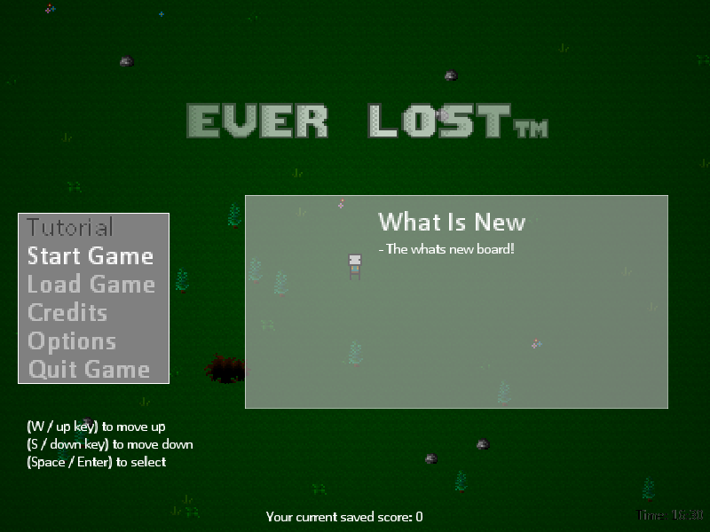

The EverLost Project
 [ HyperLink to the Everlost page ]Everlost was the second game I ever made. It was where I gained my most valuable experiences. Unfortunately, the project was never completed due to a lack of a clear end goal. I kept adding things, and the project just grew bigger. The difficulty of working on the project never increased because I always considered future scenarios.
But I will never forget this project as it is a reminder that hard things never come easy, so just keep going.
EverLost featured multiplayer support, controller support, keybinding, and local multiplayer. The game is about a hiker who gets forever lost in the mountains, even if you retrace your steps, it would be completely new terrain, slay monsters and stay alive for as long as you can. (Made In GameMaker Studios 2)